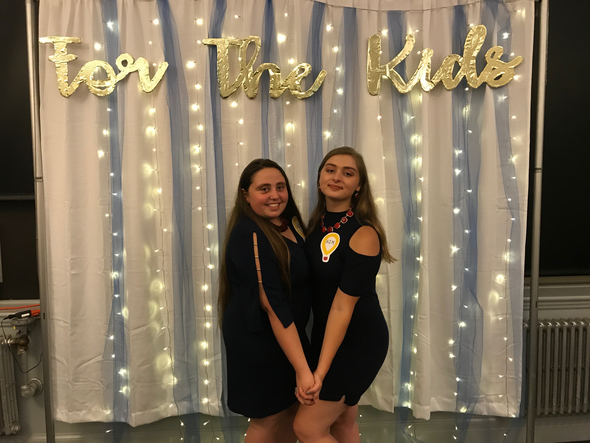
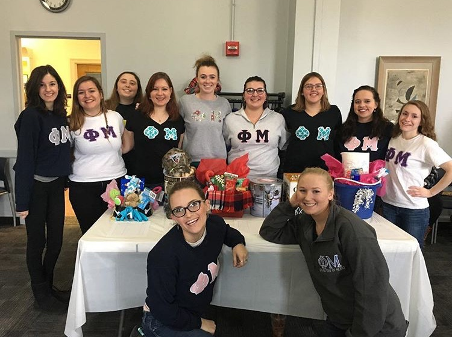

<!DOCTYPE html>
<html lang="en">
<head>
    <meta charset="UTF-8">
    <title>Title</title>
</head>

</html>

<h1> <div style="text-align: center;"> <div style="background-color:#42478b;color:#ffcae1;padding:2%;">Service for CMNH </div> </div> </h>
    <h2> <div style="text-align: center;"><div style="background-color:#42478b;color:#ffcae1;padding:2%;"> Fundrasing for Miracle Children 365! </div> </div> </h2>

    <body style="background-color:#9fc6ff;">

    <body>
    
    
    </body>

    <p style="background-color:#ffcae1;color:#9fc6ff;padding:2%;"> Phi Mu has nationally supported CMNH since 1986: one of CMNs longest partnerships links us to sisters around the country and generations of sisters. Raised over 14$ million all time, in recent years approx 1.2 million per year: reached 2 million in 2017 we are growing as a Fraternity and we are increasing our fundraising efforts as it is an integral part of who we are. Locally Pi chapter fundraises throughout the year, and has been the top fundraiser at Black BearTHON, which benefits Northern Lights Eastern Maine Medical Center, our local CMNH hospital. This is especially important to us as CMNH has helped some of our sisters and alumnae when they were young so we want to continue to give back.

        </p>


    <p
        <nav>
            <ul>
                <li><a href="Sports.html">Sports</a></li>
                <li><a href="Sisterhood Explorations.html">Sisterhood Explorations</a></li>

                <li><a href="index.html">Return to Home Page</a></li>
            </ul>
        </nav>

    </body>